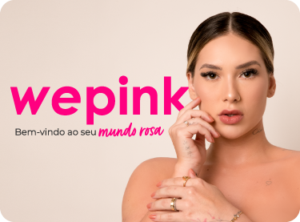
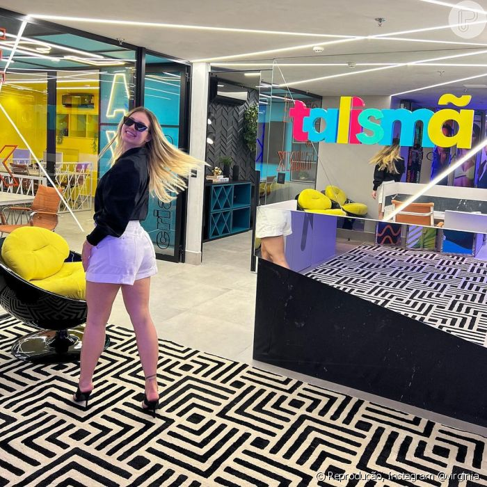

WePink
A marca WePink foi fundada em 2022,é uma empresa voltada para a área da beleza.Onde está faturando milhões de reais, em apenas 90 dias de lançamento da marca já faturou mais R$17,4 milhões com apenas um perfume.Sendo que no site da marca voçê encontra vários outros produtos.
Talismã
A empresa traz um novo conceito de agenciamento artístico no mundo digital, onde as mídias sociais são hoje pioneiras no quesito propaganda, sendo a forma que mais cresce na divulgação de produtos, serviços e ideias, com custos mais acessíveis do que os métodos convencionais (como rádio, TV e jornais).
O marketing digital se propaga nas redes e alcança públicos cada vez maiores, e com propriedade no assunto, a Talismã Digital presta um serviço 360º para seus agenciados, que vão desde conexão com grandes marcas, projetos, campanhas e muito mais.
